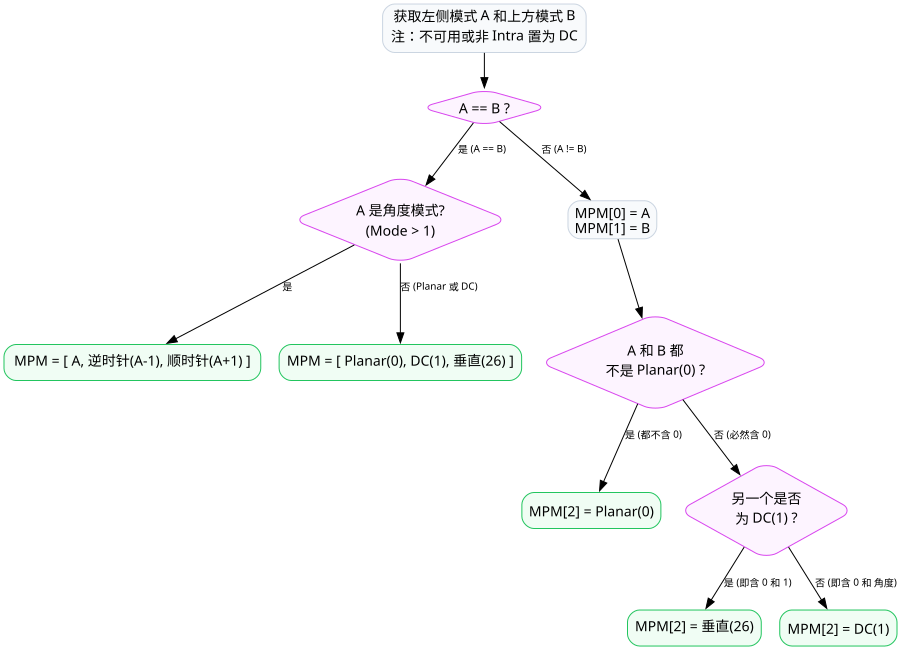
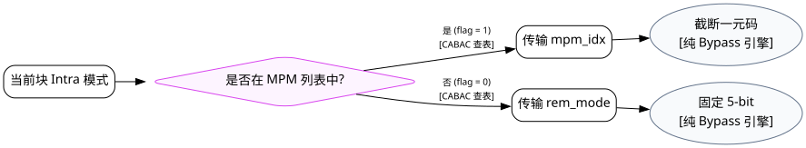
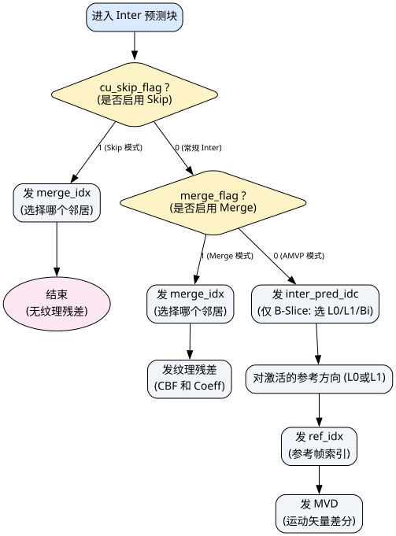
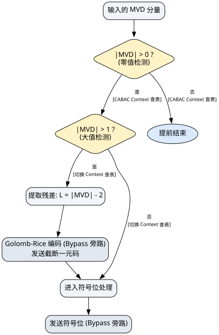
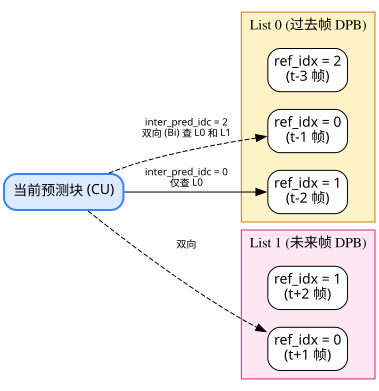
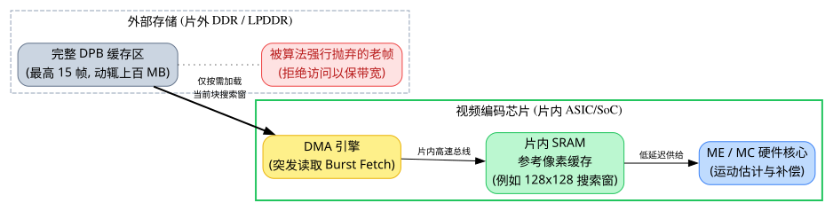

Intra / Inter 预测语法
SCABAC Cost Architecture
在 HEVC (H.265) / VVC 的 RDO 决策中，预测模式本身的信令开销 (Prediction Syntax) 是成本计算的重要一环。
注：在标准 C-Model 算法层面，无论是前期粗选模式（Pred 阶段），还是高精细度选择（Full RDO 阶段），其计算 Fractional Bits 的底层 CABAC 算法是完全一致的。因此，本文档中描述的公式、流程与 Bypass 处理机制，是贯穿整个编码架构的通用核心理论。
第一章：CABAC 引擎的“估价基石” (State 与 LUT)
在探讨具体语法的代价之前，我们必须首先解答一个核心痛点：CABAC 查表估算时，神秘的 State 是从哪里来的？那张 Entropy_LUT 又是如何构建的？
1.1 Entropy_LUT (熵代价概率表) 的构建原理
在 C-Model 和硬件中，我们绝不会实时计算复杂的对数公式，而是直接查一张预先算好的 128 级静态表（即 m_entropyBits 表）。这张表是基于 香农信息熵公式 (Shannon Entropy) 在定点化硬件上的精确投影：
- 概率模型：HEVC 定义了 64 个概率状态（
pStateIdx取值 0~63）。状态 0 概率接近 0.5（抛硬币，代价最大），状态 63 概率极高（近乎 0.9999，代价极小）。每个状态 σ 对应一个物理小概率 (LPS)pLPS(σ)。 - 组合逻辑：每个状态的概率可以赋予 MPS (大概率符号) 或 LPS (小概率符号)，因此 64 × 2 = 128 种可能性。
- 量化权值：为了避免浮点数，标准将 1 bit 的基础代价放大到 32768 (即 215)。所以抛硬币状态的代价是 1 × 32768 = 32768，而极高概率的 MPS 代价可能小到
1200甚至更低。
表中共有 128 个十六进制数值，每对相邻的数值（偶数索引和奇数索引）严格对应一个状态 (State 0~63) 下的 MPS Cost 和 LPS Cost。计算它们的公式本源如下：
CostMPS(σ) = ⌊ -32768 × log2(1 - pLPS(σ)) ⌋CostLPS(σ) = ⌊ -32768 × log2(pLPS(σ)) ⌋在 H.264 / HEVC CABAC 的理论基石中，小概率事件的发生概率
pLPS(σ) 是一个关于状态 σ 的指数衰减函数 (Exponential Decay)：pLPS(σ) = 0.5 × ασ其中，衰减系数定为
α = (0.01875 / 0.5)1/63 ≈ 0.9492。- 当
σ = 0时，pLPS(0) = 0.5，代表最不确定的“抛硬币”初始状态。 - 每当状态
σ爬升 1 级（命中一次 MPS），LPS 的概率就会乘以0.9492（即每次衰减约 5%）。 - 当
σ = 63时，pLPS(63) = 0.01875(即约 1.875%)，这是标准定义的状态机所能达到的“最自信”的物理极限。
0x08000, 0x08000 为例，它们位于状态 0 (p=0.5)，计算得出 32768。随着状态不断向 63 逼近，MPS 的代价越小（表末尾的 0x0037f 只有 895），而 LPS 惩罚却呈现指数级暴增（表末尾的 0x2de55 高达 187989）。
0x08000, 0x08000, 0x076da, 0x089a0, 0x06e92, 0x09340, 0x0670a, 0x09cdf,
0x06029, 0x0a67f, 0x059dd, 0x0b01f, 0x05413, 0x0b9bf, 0x04ebf, 0x0c35f,
0x049d3, 0x0ccff, 0x04546, 0x0d69e, 0x0410d, 0x0e03e, 0x03d22, 0x0e9de,
0x0397d, 0x0f37e, 0x03619, 0x0fd1e, 0x032ee, 0x106be, 0x02ffa, 0x1105d,
0x02d37, 0x119fd, 0x02aa2, 0x1239d, 0x02836, 0x12d3d, 0x025f2, 0x136dd,
0x023d1, 0x1407c, 0x021d2, 0x14a1c, 0x01ff2, 0x153bc, 0x01e2f, 0x15d5c,
0x01c87, 0x166fc, 0x01af7, 0x1709b, 0x0197f, 0x17a3b, 0x0181d, 0x183db,
0x016d0, 0x18d7b, 0x01595, 0x1971b, 0x0146c, 0x1a0bb, 0x01354, 0x1aa5a,
0x0124c, 0x1b3fa, 0x01153, 0x1bd9a, 0x01067, 0x1c73a, 0x00f89, 0x1d0da,
0x00eb7, 0x1da79, 0x00df0, 0x1e419, 0x00d34, 0x1edb9, 0x00c82, 0x1f759,
0x00bda, 0x200f9, 0x00b3c, 0x20a99, 0x00aa5, 0x21438, 0x00a17, 0x21dd8,
0x00990, 0x22778, 0x00911, 0x23118, 0x00898, 0x23ab8, 0x00826, 0x24458,
0x007ba, 0x24df7, 0x00753, 0x25797, 0x006f2, 0x26137, 0x00696, 0x26ad7,
0x0063f, 0x27477, 0x005ed, 0x27e17, 0x0059f, 0x287b6, 0x00554, 0x29156,
0x0050e, 0x29af6, 0x004cc, 0x2a497, 0x0048d, 0x2ae35, 0x00451, 0x2b7d6,
0x00418, 0x2c176, 0x003e2, 0x2cb15, 0x003af, 0x2d4b5, 0x0037f, 0x2de55
1.2 状态机 (State) 的全生命周期推导
文中所提的 State (在源码中对应 m_ucState) 实质是一个 7-bit 的无符号寄存器，它的位宽拆解为：State = (pStateIdx << 1) | valMPS。它的生命周期分为“Slice 级初始化”与“Bin 级状态跳变”。
在每个 Slice 开头，硬件会去读取标准规定的初始值表来获得一个 8-bit 的
initValue。
- initValue 是怎么算出来的？ 它并非由硬件或算法在运行时动态计算得出！它是 HEVC 标准委员会在制定标准时，基于海量测试序列进行离线统计训练出来的先验经验常量 (硬编码 ROM)。标准针对 I帧、P帧、B帧的不同切片类型，为几百个不同的上下文模型预设了各自固定的 8-bit 初始常数。
- 在物理位宽拆解上：这 8-bit 常数的高 4 位被用作斜率因子 (Slope)，低 4 位被用作截距因子 (Offset)。
State：
// 初始化计算公式骨架
slopeIdx = (initValue >> 4) * 5 - 45
offsetIdx = ((initValue & 15) << 3) - 16
preCtxState = clamp( ((slopeIdx * QP) >> 4) + offsetIdx, 1, 126 )
然后，将这个范围在 [1, 126] 之间的 preCtxState，通过以下硬分叉逻辑，解耦映射为概率状态机真正的核心变量 valMPS 和 pStateIdx：
// 阈值判决：64 是多空概率的分水岭 if (preCtxState >= 64) { valMPS = 1; // 大于一半，大概率符号锁定为 1 pStateIdx = preCtxState - 64; // 映射出 0~62 的初始概率等级 } else { valMPS = 0; // 小于一半，大概率符号反转为 0 pStateIdx = 63 - preCtxState; // 同样映射出 0~62 的初始概率等级 } // 最终缝合拼装进 7-bit 物理寄存器 State = (pStateIdx << 1) | valMPS;
这套初始化逻辑是 CABAC 引擎通用的。但具体到我们要讲的
prev_intra_luma_pred_flag（MPM 命中标志）这个语法元素时：如果经过这套公式算出来
valMPS = 1，它在物理语义上就代表：在当前的 QP 和切片类型下，算法通过历史经验先验地判定，当前块命中 MPM 的概率远大于落入 Remaining 模式的概率。反之亦然。
随着编码的进行，每送入一个 Bin，硬件必须进行一拍状态机跳变：
- 若输入的 Bin 等于 valMPS (命中大概率)：状态机的
pStateIdx会往上爬升（查表m_aucNextStateMPS），最高爬到 62（63被保留使用），此时该语法的 Cost 变得越来越便宜。 - 若输入的 Bin 属于 LPS (遭遇冷门小概率)：状态机会遭到重罚，
pStateIdx大幅下跌（查表m_aucNextStateLPS）。如果跌破 0，则valMPS发生翻转。这时的 Cost 惩罚极其巨大。
State = 65，指的就是这个 7-bit 寄存器达到了 pStateIdx = 32 且 valMPS = 1 的高度稳定状态。
刚刚讲述的“发一个 Bin 跳变一次”是标准的真实码流生成机制。但在 RDO (率失真优化) 阶段，为了估算代价，C-Model 和硬件产生了一条巨大的鸿沟：
- C-Model 的做法 (精准但极度串行)：在源码
TEncCu和TEncSearch中，存在大量load()和store()操作。C-Model 维护了一套深度绑定的四叉树状态数组 (m_pppcRDSbacCoder)。每测试一种 Mode，它都会先load父节点的初始 State，然后在这个 Mode 内部严格按照 Bin 级进行 State 跳变与更新。如果该 Mode 的代价最小，就把跳变后的 Statestore到CI_TEMP_BEST供后续使用。这意味着 C-Model 的 RDO 依然是高度串行的。 - 硬件的破局方案 (CTU 级冻结)：在实际芯片设计中，为了让无数个 Mode 和 CU 划分能够全并行估算代价，绝对不可能为每个 Mode 维护独立的反馈跳变。因此，硬件通常会在一个 CTU (或 LCU) 开始前，冻结一份全局 State。在整个 CTU 的 RDO 并行搜索过程中，所有查表均使用这个定死的 State，不再进行 Bin 级反馈跳变。直到最后挑出真正的最优解、真正写入码流时，才走标准的跳变流程。
第二章 Intra 预测语法的 CABAC 代价计算
在帧内预测中，编码器需要传递 35 种（HEVC）预测方向。为了极大地压缩这个信息，标准引入了 MPM (Most Probable Mode) 列表机制。Intra 模式的码率代价主要围绕 MPM 展开。
2.0 什么是 MPM 机制？(概念解耦)
由于相邻的像素往往具有相似的纹理方向，当前块的预测模式有极大概率与其左侧块或上方块相同。MPM 机制就是基于空间相关性，为你提前“猜”出 3 个最有可能的候选模式。
[10, 9, 11]
完备的 MPM 列表推导规则 (基于 C-Model getIntraDirLumaPredictor)：
标准将不可用邻居或非 Intra 邻居的模式默认置为 DC (Mode 1)。然后根据 A 和 B 两个模式是否相等，分两棵大树进行严格推导：

所以回到我们刚才的空间例子，当 A=10 且 B=10，这命中了“情况1”中的“角度模式”。因此推导出的列表是：[10, 9, 11]（注意：之前简化的 [10, 0, 1] 在这里得到了严谨的算法级修正）。

2.1 MPM 命中标志 (prev_intra_luma_pred_flag)
表示当前最优的预测方向是否在利用左、上邻居块推导出的 3 个 MPM 列表中。
上下文推导：该标志的上下文索引（CtxInc）固定为 0，不依赖空间邻居的复杂坍缩。在硬件实现中，直接使用一个固定的概率机状态。
- ⊕ (按位异或符): 这是一个极其精妙的硬件级优化。将 1 bit 的输入值与状态值的最低位 (valMPS) 进行异或操作，直接计算出查表索引，完全消除了
if-else分支延时。 - Costflag: 查表输出的 Fractional Bits 代价结果。
- Entropy_LUT: 128 级的静态熵代价概率表 (即 第一章中详细剖析的 m_entropyBits)。
- State: 当前概率模型的 7-bit 寄存器值 (偶数索引指向 MPS 代价，奇数指向 LPS 代价)。
- Flag_Value: 实际想要传输的 1-bit 语法元素值 (0 或 1)。
2.2 MPM 索引 (mpm_idx)
为了提高吞吐率，
mpm_idx 采用 截断一元码 (Truncated Unary) 且全部走 Bypass 旁路引擎！因为 Bypass 的概率被强制假定为 50%（每 bit 固定代价 32768），所以它的码率代价是完全固定的常数，完全无需状态机迭代。
2.3 剩余模式 (rem_intra_luma_pred_mode)
32 种剩余模式正好可以通过定长的 5 位无符号数 (Fixed-Length) 表示。由于是 Bypass 模式，其估算代价永远死死地固定为常数：
假设在图 1 的场景中，当前状态机的 State = 65 (pStateIdx=32, valMPS=1)（这意味着历史统计极度倾向于命中 MPM）。
场景 A：你想测试 Mode 10 的 RDO 代价
1. 检查 MPM 列表 [10, 9, 11]，Mode 10 处于 Index 0。
2. 发送命中标志：Flag_Value = 1。
计算 LUT 索引：Index = State ⊕ Flag_Value = 65 ⊕ 1 = 64。
查表：去第一章静态表寻找索引为 64 的元素（偶数，代表 MPS 代价），查得十六进制 0x01c87，转换为十进制得出 CABAC Cost 为极小的 7303。
3. 发送 MPM 索引：Index 0 的 Bypass 代价是 1 bit（32768）。
总代价 Cost = 7303 + 32768 = 40,071。
场景 B：你想测试 Mode 15 的 RDO 代价
1. 检查 MPM 列表 [10, 9, 11]，Mode 15 不在里面。
2. 发送命中标志：Flag_Value = 0。
计算 LUT 索引：Index = State ⊕ Flag_Value = 65 ⊕ 0 = 65。
查表：去第一章静态表寻找索引为 65 的元素（奇数，代表 LPS 巨大惩罚），查得十六进制 0x166fc，十进制高达 91900。
3. 发送剩余模式：固定 5 bit Bypass 代价（163840）。
总代价 Cost = 91900 + 163840 = 255,740。
结论：场景 B 的高额代价会使模式 15 在 RDO 决策中被排除。
第三章 Inter 预测语法的 CABAC 代价计算
帧间预测的语法远比 Intra 复杂。为了清晰地理清各个语法元素的归属关系，我们在深入计算前，先俯瞰整个 Inter 模式的 CABAC 码流写入流程树。
正如您所见，诸如 ref_idx（参考帧）、inter_pred_idc（预测方向）以及庞大的 MVD，统统只存在于最右侧的 AMVP 模式链路下！而左侧的 Skip 和 Merge 模式为了追求码率压缩，将这些具有较高算力开销的元素省略，直接继承了邻居的时空信息。

3.0 什么是 Merge List 机制？(时空融合寻址动画)
和 Intra 靠 MPM 猜方向类似，Inter 模式靠 Merge List (运动矢量候选列表) 猜运动轨迹。为了最大化利用历史信息，标准定义了一套特定的周边空间 + 异面时间搜寻序列，最多构建出 5 个候选。您可以观察下方的探测顺序动画：
(左上)
(上方)
(右上)
(左侧)
(Target)
(左下)
(时域轴)
- 寻址顺序： 按照动画闪烁的节奏，硬件必须严格按照
A1 -> B1 -> B0 -> A0 -> (如果没满则测 B2) -> (如果还没满则穿透到异面参考帧测 TMVP)的顺序进行排查寻址。 - 去重与填补： RDO 会边找边去重。如果找完一圈都不满 5 个，硬件还会自己造出组合的双向 MV，或者塞入 (0,0) 的零运动矢量来硬性凑满 5 个位置。
merge_idx的物理意义： 我们在下文发出去的merge_idx，就是告诉解码器：“嘿，我在这 5 个找出来的候选里挑了第 N 个，你直接把它的 MV 拿来用就行，别的我都不传了！”- TMVP (Temporal Motion Vector Prediction) 的异面穿越： 前 5 个候选都是同一张画面的邻居，而 TMVP 是向后/向前穿越到历史帧或未来帧，找到和当前 CU 坐标完全重合的块，把它的 MV 按时间距离等比例缩放（Scaling）后偷过来用。如果画面是在做大面积平移（如平移镜头），TMVP 的命中率会奇高无比！
- ROM 初始化常数表是怎么来的？： 在后文的推导中，我们会看到
137、201等特定的常数。它们是 JCT-VC 标准委员会在 2013 年，通过大量样本的统计仿真，拟合出的一套“基于 B/P/I 帧型的先验最优解”，随后被固化在 HEVC 芯片的 ROM 里。
3.1 核心概念：CABAC 引擎的两套档位 (Context Mode vs Bypass)
在接下来的 Inter 语法中，您会频繁看到这两种截然不同的编码模式，这也是整个视频架构中决定芯片面积和功耗的分水岭：
- Context Mode (上下文查表模式)：
也就是我们在第一、二章辛苦推导的全套流程。硬件需要感知道空间邻居算出CtxInc-> 读取死常数initValue-> 算线性方程得出State-> 异或后查 128 级Entropy_LUT大表得出代价，最后还要根据命中与否更新下一次的概率状态。
代价极低（可能不到 10000），但芯片的逻辑门开销和时延极大。一般只用于极小概率出现 1 的最核心开关（如 skip_flag）。 - Bypass Mode (旁路盲猜模式)：
芯片关闭所有概率引擎和查表功能。强行假定发送 0 和发 1 的概率是等概的 50%。此时 CABAC 的 Cost 是一个恒定不变的常数：每发 1 个 bit，代价固定为32768。
代价较高（每比特 32768），但对芯片没有任何逻辑负担，吞吐量较高。一般用于统计上接近等概率的数据（如 MVD 残差、正负号）。
- Skip 模式 (VIP 全包套餐)：物理传输上只发
cu_skip_flag=1和merge_idx。底层引擎触发“极速短路机制”，绝对不发merge_flag和纹理残差。但在解码器的逻辑语义中，它会被强行脑补推导为merge_flag=1且残差全为 0。 - 普通 Merge 模式 (单点套餐)：物理传输上先发
cu_skip_flag=0，再发merge_flag=1和merge_idx。最后还会发送真实的画面纹理残差（cbf和coeff）。 - 命中 TMVP (特殊的座位号)：在底层 CABAC 编码的语法上，命中时域的 TMVP 和命中普通的空间块（如 A1/B1）毫无区别，统统只发一个
merge_idx。TMVP 只是 Merge List 里的一个普通候选项（通常排在较后的位置，如idx=4）。唯一的代价区别是，由于它位置靠后，发送它所需的截断一元码更长，会多吃几个 Bypass 的死常数惩罚。
3.2 Skip 模式与 Merge 模式：非常精简的开销
由于这两种模式都不需要传输具体的运动矢量残差（Skip 模式甚至连像素纹理残差都不传），它们的语法被设计得非常精简：
- cu_skip_flag (是否启用 Skip)：
当前 CU 是否作为 Skip 模式编码。它的CtxInc会根据左侧和上方邻居的 Skip 状态（0~2）进行上下文建模，这是 Inter RDO 最先探测的顶级标志。一旦命中，直接短路后续所有纹理语法的计算。 - merge_flag (是否启用 Merge)：
如果不是 Skip 模式，紧接着会测这个标志。它使用单一固定的 Context Mode 进行状态机查表编码。 - merge_idx (候选索引)：
采用 混合编码 策略。首位 Bin (判断是否为 idx=0) 极其重要，使用 Context Mode 编码；如果不是 0，后面展开的截断一元码统统被强制降级到 Bypass 旁路进行 50% 等概率盲猜编码。
假设我们正在评估当前块是否使用 Skip 模式，且我们想用候选列表里的第 2 个 MV (Index 1)。
计算步骤：
1. 发送 cu_skip_flag = 1。
[硬核展开] cu_skip_flag 的初始 Context 是怎么算的？
a) 空间坍缩：假设当前块的“左侧块”和“上方块”也都是 Skip 模式，则推导出上下文索引 CtxInc = 1 + 1 = 2。
b) 取死常数：查标准 B-Slice 初始化表，拿到 CtxInc=2 对应的常量 INIT_SKIP_FLAG = 201。
c) 算前置态：代入 QP = 32 到第一章 1.2 节的线性公式，算出 slope = 15, offset = 56，得 preCtxState = (15 * 32 >> 4) + 56 = 86。
d) 分水岭解包：因为 86 >= 64，抽出 valMPS = 1（代表算法先验判定本块大概率随大流也是 Skip），pStateIdx = 86 - 64 = 22。最终物理缝合出 State = 45。
e) 查表得真值：实际想发的值是 1，命中大概率！算异或 Index = 45 ⊕ 1 = 44。查第一章静态表第 44 位，拿得十六进制 0x021d2，即十进制的极小代价 8658！
2. 极速短路设计 (Short-circuit)。
因为命中了 Skip 模式，硬件的 RDO 估值回路会直接跳过 merge_flag、划分标志以及所有 cbf 残差系数的代价计算，这为硬件省下了巨量的时钟周期。
3. 发送 merge_idx = 1。
根据混合编码机制，它的首位 Bin (表明 idx 不为 0) 需要查 Context 表。
[硬核展开] 首位 Bin 的 Context 是怎么来的？
a) 查标准 B-Slice 初始化表，规定 merge_idx 初始常量 INIT_MERGE_IDX_EXT = 137。
b) 假设当前 QP = 32，代入第一章的线性公式：slope = (137>>4)*5-45 = -5，offset = ((137&15)<<3)-16 = 56。
c) 算得 preCtxState = (-5 * 32 >> 4) + 56 = 46。
d) 因为 46 < 64，所以 valMPS = 0，pStateIdx = 63 - 46 = 17。最终缝合出的初始概率机 State = (17 << 1) | 0 = 34。
e) 我们现在要发送的首位 Bin 值是 1，Flag_Value = 1。由于它与 valMPS(0) 不同，这是一次被狠狠惩罚的 LPS 小概率事件！
f) 计算 LUT 索引：Index = State ⊕ Flag_Value = 34 ⊕ 1 = 35。
g) 查表：去第一章静态表寻找索引为 35 的元素（奇数），查得十六进制 0x1239d，转换为十进制得出 CABAC Cost 为 74653。
首位发送完毕后，后续位元立刻移交 Bypass 旁路，发 1 bit 截断一元码，固定付出 32768 代价。
最终总代价 Cost = 8658 + 74653 + 32768 = 116,079。
结论：哪怕 merge_idx 第一位被狠狠惩罚了七万多代价，Skip 模式的总开销依然处于十万出头的绝对低位。这就是为什么在背景平移画面中，绝大部分块都能被划入 Skip 的原因。
3.3 AMVP 模式：MVD 分层架构（烧钱黑洞）
当选择 AMVP 模式时，主要码率开销往往来自于 运动矢量差分 (MVD, Motion Vector Difference)。为了有效压缩，标准对 MVD 的水平和垂直差值设计了一套特定的分层混合编码算法。

假设我们同样在 QP = 32 的 B-Slice 下，如果 cu_skip_flag = 0（未短路 Skip，进入常规 Inter），我们来看看剩下两种模式在 RDO 估值时的庞大差距：
场景 A：使用 Merge 模式
1. 测 merge_flag = 1 (命中大概率)：
查标准 B-Slice 初始化表得死常量 154。代入公式得 slope=0, offset=64，算出 preCtxState = 64。解包得 valMPS = 1, State = 1。
既然发的是 1，命中 MPS！Index = 1 ⊕ 1 = 0。查大表得 0x08000，即极度微小的代价 32768 (刚好 1 bit)。
2. 发 merge_idx = 1：与前文 Skip 模式一样，首位 Context 加后续 Bypass，共耗费代价 107,421。
3. 发送纹理残差：为了控制变量，纯粹对比运动信息的代价，在此排除残差开销（假设两者的 TU 残差树完全相同）。
Merge 运动信息总代价 Cost = 32768 + 107421 = 140,189。
场景 B：使用 AMVP 模式（即使只传微小的 x=2, y=0 的 MVD）
1. 测 merge_flag = 0 (违逆大概率)：State 还是 1，但我们发 0 (LPS)。Index = 1 ⊕ 0 = 1。查大表第 1 位得代价 32768。
2. 发 AMVP 预测器索引：包含 ref_idx 和 mvp_idx。它们的首位都采用 Context 模型而不是盲猜！
a) ref_idx = 0：查第四章表取常数 153，代入公式得 preCtxState=56，解包得 State=14, valMPS=0。发送 0 命中 MPS，查大表得代价 20159。
b) mvp_idx = 0：查第四章表取常数 168，代入公式得 preCtxState=58，解包得 State=10, valMPS=0。发送 0 命中 MPS，查大表得代价 23005。
两项合计代价为 43164。
3. 发 MVD 黑洞 (最可怕的烧钱环节)：按照图 4 的分层架构：
[X 分量绝对值 2]：
a) greater0_flag = 1：查表得死常量 169。解包得 State=5, valMPS=1。发送 1 命中 MPS，Index = 5 ⊕ 1 = 4。查 128 级大表得代价 28306。
b) greater1_flag = 1：查表得死常量 198。解包得 State=2, valMPS=0。发送 1 为 LPS 违逆大概率！Index = 2 ⊕ 1 = 3。查大表受到严厉惩罚，代价飙升至 35232。
c) 截断余量 |MVD|-2 = 0，走一阶指数哥伦布 Bypass 占 1 bit (死常数代价 32768)。
d) 符号位 sign_flag，走纯 Bypass 占 1 bit (死常数代价 32768)。
[Y 分量绝对值 0]：
e) greater0_flag = 0：同样基于 State=5，发 0 为 LPS！查大表代价高达 37696。
AMVP 运动信息总代价 Cost = 32768 + 43164 + 28306 + 35232 + 32768 + 32768 + 37696 = 242,702。
结论：哪怕 AMVP 的残差运动只有仅仅 2 个像素的微小偏移，其 MVD 分层引擎所付出的巨幅 Bypass 代价也足以将总 Cost 炸飞到近 30 万。这就是为什么在真正的芯片 RDO 搜索树中，硬件架构师宁可强行剪枝错杀，也不愿让算法轻易掉入 AMVP 模式的根本原因！
- 零值状态感知：硬件首先计算
|MVD|，通过Context 0判定是否大于 0。若为零则停止并仅仅累加 1 次 CABAC 代价。 - 大值状态感知：若仍有残余，通过
Context 1判定|MVD|是否大于 1。以上两步消耗了概率模型资源。 - 旁路泄洪 (Bypass Dump)：一旦
|MVD| > 1，标准认为剩余值已失去了概率统计意义。硬件会直接剥离前两位，对剩余数值运用 Exp-Golomb (一阶指数哥伦布) 进行暴力二值化，产出的巨大长度直接以恒定代价值注入 Cost 中，彻底绕开状态机。
3.4 参考帧与方向 (ref_idx & inter_pred_idc)
| 语法元素 | 编码特征与代价引擎 |
|---|---|
inter_pred_idc |
前 2 个 Bin 均走 Context Mode，其 ctxInc 深度依赖于当前 CU 的深度 (Depth)。 |
ref_idx |
和 merge_idx 编码方式类似！首位 Bin 走 Context Mode，后续位数走 Bypass 截断一元码。 |
很多人误以为视频编码只有“前向 1 帧”和“后向 1 帧”。实际上，从 H.264 开始就引入了 多参考帧机制 (Multiple Reference Frames)！编码器会在内存中维护两个巨大的 解码图像缓存区 (DPB, Decoded Picture Buffer)，即 List 0 和 List 1。每个 List 最多可以同时存放 15 帧 历史或未来图像！
因此，inter_pred_idc 仅仅是决定“去哪个 List 找”（方向），而 ref_idx 才是决定“去这个 List 里的第几张图找”（索引）。

关于“DPB 缓存区对 SRAM 和 DDR 带宽的要求”这一问题，可以从以下硬件实现角度理解：
硬件中无法将完整帧全部放入片内 SRAM，也不会对所有参考帧进行遍历搜索：
在真实的视频编码 ASIC/SoC 中：
1. 外部存储： DPB 完整图像不会存放在片上 SRAM 中。它们被存放在外部的 DDR/LPDDR 内存中。
2. 片内参考像素缓存 (Reference Cache)： 为了缓解 DDR 读取延迟、功耗和带宽瓶颈，硬件只会在片内 SRAM 开辟一块较小的二维窗口缓存（例如 128x128 像素）。当当前块准备做 ME/MC 时，DMA 控制器会去 DDR 中，把基于当前运动预测出的局部参考像素，突发读取 (Burst Fetch) 到这块 SRAM 缓存里。
3. 算法级的搜索限制： 虽然 HEVC 标准允许 ref_idx 指向最多 15 个参考帧，但为了避免超出内存带宽和算力处理极限，商用硬件编码器在 RDO 算法层会限制搜索深度（例如把 active_ref_list 截断为仅搜索最近的 1 到 2 帧），以此在“压缩率”和“芯片功耗”之间取得平衡。

假设我们依然在 QP = 32 的 B-Slice 下，当前 CU 的深度 Depth = 1：
1. 发送参考方向 inter_pred_idc (双 Bin 结构)
根据 HM 源码 codeInterDir()，Bin 0 决定是否双向，Bin 1 决定前/后向。查第七个附加常数表 INIT_INTER_DIR：
Bin 0 依赖 Depth=1，取表内常数 79。代入公式算出 preCtxState = 54。解包得 State = 18, valMPS = 0。
Bin 1 不依赖 Depth，死死绑定第 5 个常数 31。代入算出 preCtxState = 24。解包得 State = 78, valMPS = 0。
基于这套底层状态机，三种方向的精确查表代价如下：
场景 a) 双向预测 (Pred_Bi)：发送 Bin 0 为 1 (违逆大概率 LPS)。Index = 18 ⊕ 1 = 19。查大表代价为 54942。流程结束。
场景 b) 前向单向 (Pred_L0)：发送 Bin 0 为 0 (命中 MPS，代价 17734)。继续发 Bin 1 为 0 (再次命中 MPS，代价 3202)。总代价 = 17734 + 3202 = 20,936。
场景 c) 后向单向 (Pred_L1)：发送 Bin 0 为 0 (代价 17734)。发 Bin 1 为 1 (LPS 违逆，代价飙升至 128857！)。总代价 = 17734 + 128857 = 146,591！
(💡 架构思考：基于海量样本的统计结果，在 B 帧中，使用后向单向预测（Pred_L1）的概率较低。因此，规范在设计底层常数时，对 L1 施加了显著的算力惩罚，促使编码器在 RDO 阶段倾向于放弃该选项。)
2. 发送参考帧索引 ref_idx = 2
首位走 Context：查第四个附加表 INIT_REF_PIC 取常数 153。由前文可知它对应 State=14, valMPS=0。发 1 违逆大概率 (LPS)，Index = 14 ⊕ 1 = 15。查大表得昂贵代价 50015。
后续走 Bypass：因为索引是 2，截断一元码还需要再发两个位数 1 和 0。纯走 Bypass 引擎消耗 2 × 32768 = 65536。
总代价为 50015 + 65536 = 115,551！
4. 附录：HEVC 芯片固化的 ROM 核心常数表
在真实的视频编码芯片中，CABAC 引擎在处理每一个语法元素时，第一步就是从芯片的 ROM（只读存储器）中读取以下固化常数表。这就是我们前文实战中那些“死常数”的来源。
这些常数是 JCT-VC 委员会通过机器学习拟合的先验最优解，按帧类型严格划分为三行：第 0 行 = B-Slice，第 1 行 = P-Slice，第 2 行 = I-Slice。
由于受左侧和上方邻居的 Skip 状态影响，它包含 3 个 Context (CtxInc = 0, 1, 2)：
static const UChar INIT_SKIP_FLAG[3][NUM_SKIP_FLAG_CTX] =
{
{ 197, 185, 201, }, // 第 0 行：B-Slice (如 CtxInc=2 时，取第3个数 201)
{ 197, 185, 201, }, // 第 1 行：P-Slice
{ CNU, CNU, CNU, }, // 第 2 行：I-Slice 禁用 (CNU = Context Not Used)
};
2. INIT_MERGE_FLAG_EXT (决定是否启用 Merge 预测)不需感知邻居，只有 1 个 Context：
static const UChar INIT_MERGE_FLAG_EXT[3][NUM_MERGE_FLAG_EXT_CTX] =
{
{ 154, }, // B-Slice (查表直接取 154)
{ 110, }, // P-Slice
{ CNU, }, // I-Slice 禁用
};
3. INIT_MERGE_IDX_EXT (决定选择哪个候选列表项)专门用于 merge_idx 的第一位（首位 Bin），不需感知邻居：
static const UChar INIT_MERGE_IDX_EXT[3][NUM_MERGE_IDX_EXT_CTX] =
{
{ 137, }, // B-Slice (查表直接取 137)
{ 122, }, // P-Slice
{ CNU, }, // I-Slice 禁用
};
4. INIT_REF_PIC (决定参考帧索引 ref_idx)
static const UChar INIT_REF_PIC[3][NUM_REF_NO_CTX] =
{
{ 153, 153 }, // B-Slice (查表直接取 153)
{ 153, 153 }, // P-Slice
{ CNU, CNU }, // I-Slice 禁用
};
5. INIT_MVP_IDX (决定 AMVP 预测器索引 mvp_idx)
static const UChar INIT_MVP_IDX[3][NUM_MVP_IDX_CTX] =
{
{ 168, CNU, }, // B-Slice (查表直接取 168)
{ 168, CNU, }, // P-Slice
{ CNU, CNU, }, // I-Slice 禁用
};
6. INIT_MVD (决定运动矢量差分的 absolute_greater0/1_flag)包含 2 个关键 Context：Ctx 0 用于 greater0，Ctx 1 用于 greater1：
static const UChar INIT_MVD[3][NUM_MV_RES_CTX] =
{
{ 169, 198, }, // B-Slice (Ctx0=169, Ctx1=198)
{ 140, 198, }, // P-Slice
{ CNU, CNU, }, // I-Slice 禁用
};
7. INIT_INTER_DIR (决定参考方向 inter_pred_idc)包含 5 个深度 Context，依赖当前 CU 的 Depth 索引：
static const UChar INIT_INTER_DIR[3][NUM_INTER_DIR_CTX] =
{
{ 95, 79, 63, 31, 31, }, // B-Slice (如 Depth=1 时取 79)
{ 95, 79, 63, 31, 31, }, // P-Slice
{ CNU, CNU, CNU, CNU, CNU, }, // I-Slice 禁用
};